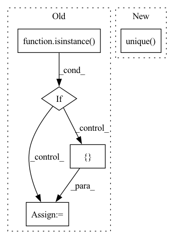

Pattern ID :13709
Before Change
validation data
if isinstance( df, pd.DataFrame) :
df_is_dict = False
df_dict = { "__df__": df}
elif isinstance(df, dict):
df_is_dict = True
df_dict = df
else:After Change
validation data
df, _, _, _ = prep_or_copy_df(df)
if len(df["ID"].unique() ) == 1:
for df_name, df_i in df.groupby("ID"):
folds = _crossvalidation_split_df(df_i, n_lags, n_forecasts, k, fold_pct, fold_overlap_pct)
else:In pattern: SUPERPATTERN
Frequency: 4
Non-data size: 5
Instances Fragment ID: 45826570
Project Name: ourownstory/neural_prophet
Commit Name: 7fcf23557cb5b30885a8a07387d411c61a50a05e
Time: 2022-06-21
Author: mgheorghecr@gmail.com
File Name: neuralprophet/df_utils.py
M Class Name: AnonimousClass
N Class Name: AnonimousClass
M Method Name: crossvalidation_split_df(7)
N Method Name: crossvalidation_split_df(7)
M Parent Class:
N Parent Class:
M File Name: neuralprophet/df_utils.py
N File Name: neuralprophet/df_utils.py
M Start Line: 709
M End Line: 717
N Start Line: 701
N End Line: 722
Before Change
pd.DataFrame, dict
validation data
if isinstance( df, pd.DataFrame) :
df_is_dict = False
df_dict = { "__df__": df}
elif isinstance(df, dict):
df_is_dict = True
df_dict = df
else:After Change
df_train = pd.concat((df_train, df_t.copy(deep=True)), ignore_index=True)
df_val = pd.concat((df_val, df_v.copy(deep=True)), ignore_index=True)
else:
if len(df["ID"].unique() ) == 1:
for df_name, df_i in df.groupby("ID"):
df_train, df_val = _split_df(df_i, n_lags, n_forecasts, valid_p, inputs_overbleed)
else: Fragment ID: 45826568
Project Name: ourownstory/neural_prophet
Commit Name: 7fcf23557cb5b30885a8a07387d411c61a50a05e
Time: 2022-06-21
Author: mgheorghecr@gmail.com
File Name: neuralprophet/df_utils.py
M Class Name: AnonimousClass
N Class Name: AnonimousClass
M Method Name: split_df(6)
N Method Name: split_df(6)
M Parent Class:
N Parent Class:
M File Name: neuralprophet/df_utils.py
N File Name: neuralprophet/df_utils.py
M Start Line: 924
M End Line: 949
N Start Line: 913
N End Line: 930
Before Change
det = [det[i] for i in det_label_mask]
if len(gt) == 0 and len(det) == 0:
return None
if isinstance( det, dict) :
det = [ detAfter Change
)
det_matches = torch.where(best_matches != -1, _one_tensor, _zero_tensor)
for idx in range(nb_iou_thrs):
gt_matches[idx, best_matches[idx].clamp(0, max=gt_matches.shape[1] - 1).unique() ] = 1
// set unmatched detections outside of area range to ignore
det_areas = compute_area(det, iou_type=self.iou_type).to(self.device) Fragment ID: 45826575
Project Name: pytorchlightning/metrics
Commit Name: eacfd2fcd4521fb3c69bcb53e5b1be9117c8a163
Time: 2022-10-12
Author: 46073029+stancld@users.noreply.github.com
File Name: src/torchmetrics/detection/mean_ap.py
M Class Name: MeanAveragePrecision
N Class Name: MeanAveragePrecision
M Method Name: _evaluate_image(6)
N Method Name: _evaluate_image(6)
M Parent Class: Metric
N Parent Class: Metric
M File Name: src/torchmetrics/detection/mean_ap.py
N File Name: src/torchmetrics/detection/mean_ap.py
M Start Line: 578
M End Line: 626
N Start Line: 568
N End Line: 622